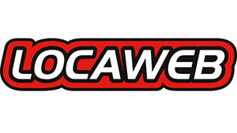
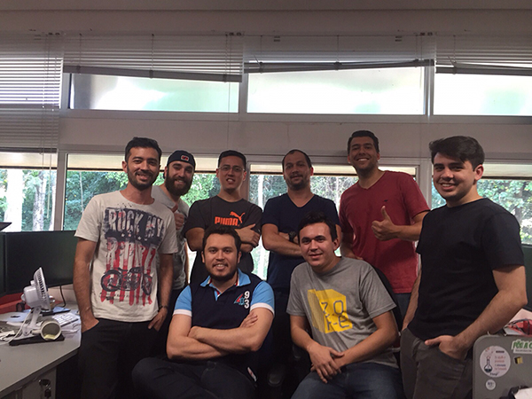

Desenvolvimento
Front-end

Deivid Marques
Desenvolvedor Front-end
Guaratiguetá - SP
@deividmarques
- Livro Coletânea Front-end
- GT de Acessibilidade do W3C Brasil
- Colunista do Tableless
- Organizador de Eventos
Desenvolvimento
Front-end
Locaweb
Uma das 100 melhores empresas de TI pra se trabalhar no Brasil
Fonte: greatplacetowork - 2015
Grupo Locaweb
- Locaweb
- Tray
- All in
- Eventials
Time de Front-end de Produtos

Sobre o time
- 7 pessoas
- Perfis de Backend e Designer
- Multidisciplinar e auto gerenciável
- 16 projetos
- Horário Flexível
- Home Office ( VPN / Slack / Hangout )
- Scrum e Kanbam
- Retrospectivas, reuniões, 1x1
Outros times
- UX, Designer
- Back-ends , QA
- SysAdmin, Infra-estrutura
- Marketing, Eventos
Tecnologias
- HTML5, Sass, Javascript, jQuery
- Middleman
- Gulp, Grunt e Rake (buildar)
- Backbone
- Jasmine, Wraith
- Git
E-mail Marketing
- Padronizados
- Responsivo
- Litmus
- Documentação
Ambientes
- Desenvolvedores
- Homologação
- Produção
Backend
- Ruby on Rails
- PHP, Wordpress
- RoundCube
- Java
- .net
Locawebstyle
- Projeto Opensource
- Documentação
- Mobile First
- UX, Designer, Front-End
- Reuniões
- Issues
- Pull Request
- Futuro do framework
Recapitulando
- UX
- Designer
- Front-end
- Implementação no projeto
- QA
- Deploy
- Happy Hour
OBRIGADO
@deividmarques
github.com/deividmarques